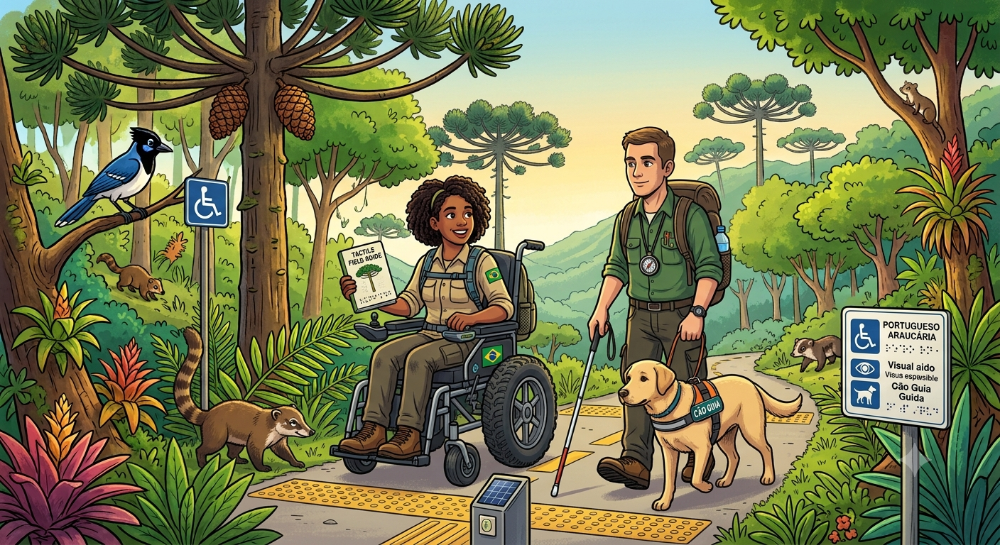

Biografia
Sou o professor Eduardo, Biólogo, Cientista e entusiasta na área de tecnologia.
Acessibilidade pode ser definida como a possibilidade e condição de alcance, percepção e entendimento para a utilização, em igualdade de oportunidades, com segurança e autonomia, do meio físico, do transporte, da informação e da comunicação, inclusive dos sistemas e tecnologias de informação e comunicação, bem como de outros serviços e instalações. Para as pessoas com deficiência e mobilidade reduzida, a acessibilidade possibilita uma vida independente e com participação plena em todos os seus aspectos; e para todas as pessoas, em diferentes contextos, pode proporcionar maior conforto, facilidade de uso, rapidez, satisfação, segurança e eficiência. (W3C Brasil).
Na Internet, o termo acessibilidade refere-se também a recomendações do W3C, que visam permitir que todos possam ter acesso aos sítios, independente de possuírem alguma deficiência ou não. Essas recomendações passam pelo tamanho e cor da fonte, localização dos espaços clicáveis, facilidade de disponibilização de conteúdo e outras sugestões relativas até aos códigos das páginas (HTML e CSS, entre outros).

A inclusão nas escolas públicas vai muito além de garantir a matrícula de alunos com deficiência ou em situação de vulnerabilidade; trata-se de transformar o ambiente escolar em um espaço que reconhece, respeita e valoriza a diversidade humana. Para que essa premissa se de fato se concretize, é fundamental ir além do discurso pedagógico e investir em ações práticas, como a adaptação da infraestrutura física, a formação continuada de professores e a oferta de recursos de atendimento educacional especializado. Quando uma escola pública consegue acolher as singularidades de cada estudante, adaptando seus métodos de ensino para que ninguém seja deixado para trás, ela cumpre seu papel social mais nobre: o de democratizar o conhecimento e construir uma sociedade mais justa, empática e plural desde a base.